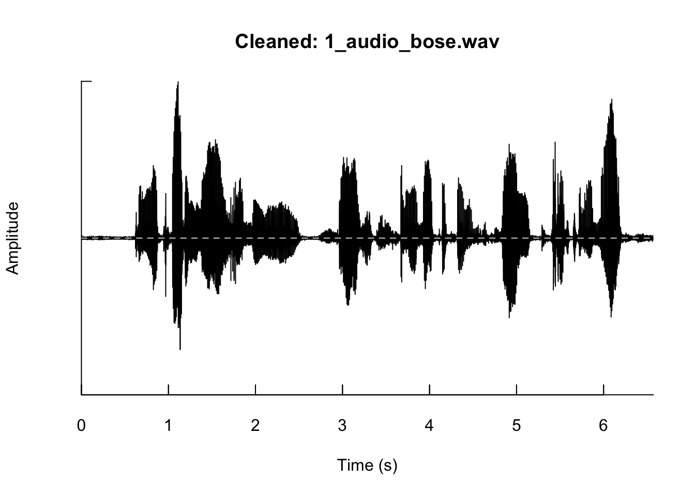
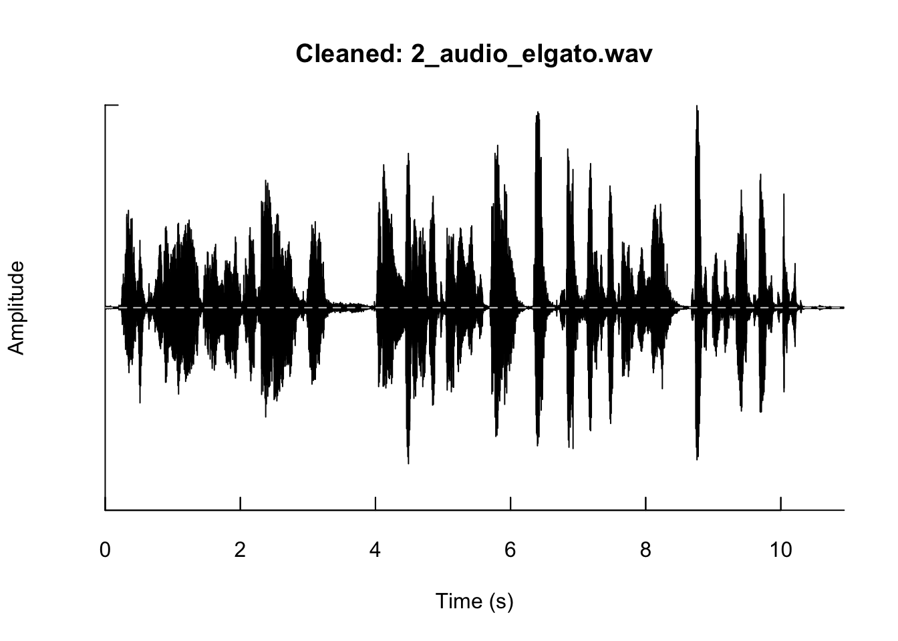

# --- Core audio & analysis -------------------------------------------------
install.packages(c(
"tuneR", "seewave", "soundgen", "phonTools", # acoustics
"voiceR", # batch extraction + reports
"tidyverse", "data.table", # data wrangling
"caret", "pROC" # modelling / validation
))
# --- Speech-to-text, language & embeddings ---------------------------------
install.packages(c(
"openai", # Whisper STT + LLM + TTS via the OpenAI API
"reticulate", # call Python from R (local Whisper, transformers)
"googleLanguageR", # Google Cloud Speech-to-Text & Natural Language
"text" # transformer text embeddings (Hugging Face)
))
# 'talk' (sibling of 'text') turns recordings into text, audio features, or
# embeddings; install from its repository when needed.Voice Analytics for Behavioral Scientists
From Acoustic Features to Conversational AI Agents (5-Day Workshop)
Course Instructor & Contact:
Prof. Dr. Christian Hildebrand
Full Professor of Marketing Analytics
Executive Director, Institute of Behavioral Science & Technology (IBT-HSG)
University of St. Gallen
Email: christian.hildebrand@unisg.ch
Web: ibt.unisg.ch | Social: LinkedIn Profile
Welcome & Logistics
Welcome to the 5-Day Voice Analytics Workshop at GSERM! This notebook serves as your interactive workspace for the entire course. We will cover the complete pipeline: from loading raw audio and extracting paralinguistic features to transcribing speech via LLMs and designing conversational AI agents.
Let’s start by verifying that your R environment is properly set up and loading all the necessary packages.
Software Setup
We work primarily in R / RStudio with Quarto for reproducible reporting, and reach into Python only through reticulate so that non-Python users never have to leave R.
Install everything once
Loading all packages to the current session
Verify your setup
Run library(tuneR); library(seewave); library(soundgen) with no errors. If that works, let’s load all packages.
# Acoustics & audio
library(tuneR)
library(seewave)
library(soundgen)
library(phonTools)
# Batch feature extraction & reporting
library(voiceR)
# Speech-to-Text
library(openai)
library(googleLanguageR)
# Data wrangling & analyses
library(tidyverse)
library(data.table)
library(caret)
library(pROC)
library(reticulate)
library(text)Day 1: Foundations & Audio Workflows
Learning goals
By the end of Day 1, participants can:
- explain why voice is a behavioral data layer rather than merely an input channel;
- distinguish acoustic observations from psychological constructs;
- read, inspect, listen to, edit, and save WAV files in R;
- produce oscillograms, pitch tracks, formant plots, and spectrograms;
- develop your capstone idea we work toward in this course.
Why voice data matters
Voice can reveal information that surveys, click data, and raw text often miss:
- affective arousal in real time;
- hesitation, uncertainty, and cognitive load;
- prosodic stance, dominance, and confidence;
- interaction breakdowns and repair;
- social and linguistic context;
- human responses to AI agents.
Theoretical Foundations
Clicks, search terms, and retrospective surveys capture conscious decisions, but they often fail to capture real-time emotional fluctuations, cognitive load, or authentic visceral reactions. Paralinguistic features (how something is said, independent of the semantic text) provide a direct, physiological window into the speaker’s emotional state, stress levels, confidence, and personality. In what follows, I provide a very brief overview of the main fields and theoretical foundations.
Linguistics
Linguistics studies the structure and use of language. For this course, the most useful parts are:
- Phonetics: how speech sounds are produced, transmitted, and perceived.
- Phonology: how sound categories work in a language.
- Semantics: how words and sentences carry meaning.
- Pragmatics and discourse: how meaning depends on context, interaction, turn-taking, repair, politeness, stance, and intention.
The key lesson here is that speech is not just text with some additional auditory noise but that speech signals in itself carry meaning and provide us with a lens into people’s behavior.
Sociolinguistics
Sociolinguistics studies how language varies across social context, community, identity, power, and setting. It helps behavioral researchers remember that “variation” is not only measurement error. Accent, register, politeness, code-switching, and style shifting can be central to the phenomenon.
Sociophonetics
Sociophonetics connects fine-grained phonetic detail with social meaning. It asks how pitch, vowels, timing, voice quality, accent, and style index identity, stance, group membership, or social context. This matters for voice analytics because the same acoustic cue can reflect emotion, identity performance, health, recording setup, or interaction design. An important insight from sociophonetics is, for example, that various social categories like your socio-economic status, power within a group, ethnicity, etc. are all encoded in the way how you speak and not just what you say.
Speech Production & Anatomy
Beyond these foundational fields, it’s also important to realize that speech is also deeply connected to our physiology. Taller people typically have a lower pitch due to their larger larynx and vocal cords. Speech is broadly speaking produced by a three-step physical system: - Respiration (Lungs): The lungs act as the power source, pushing air upward. - Phonation (Vocal Folds): Air passes through the larynx, causing the vocal folds to vibrate. The rate of vibration determines the Fundamental Frequency (\(F_0\) / pitch). - Articulation & Resonance (Vocal Tract): The vocal tract (mouth, nose, throat) filters the sound wave. Movements of the tongue, lips, and jaw create resonance peaks called Formants (\(F_1\), \(F_2\), \(F_3\)), which characterize vowels.
Note of Caution & Construct Validity
Never jump directly from waveform to construct. Think of it as a sequence:
construct -> mechanism -> expected vocal cue -> feature -> rival explanations -> validation evidence.
Check-in:
Write down one construct from your own research that might appear in voice. Then add one rival explanation that could produce the same acoustic cue.
The signal: From air pressure to R objects
Core vocabulary:
- Amplitude: how far the signal moves from its midpoint; often related to loudness or energy.
- Frequency: cycles per second; pitch is tied to fundamental frequency (
f0). - Sampling rate: how many measurements per second are stored.
- Channel: mono or stereo recording.
- Bit depth: precision of each sample.
- Wave object: an R representation of audio data used by packages such as
tuneR,seewave, orvoiceR.
First Audio Workflow
We will begin with our first practical audio workflow using tuneR and seewave. We will analyze a user interaction where a person gets increasingly frustrated with their Amazon Alexa.
Reading and Playing Sound Files
# Read audio files of the two Alexa commands
cmd1 <- readWave("voiceData/1_alexa/alexa_cmd1.wav")
cmd2 <- readWave("voiceData/1_alexa/alexa_cmd2.wav")
# Inspect the structure of the Wave objects
cmd1
Wave Object
Number of Samples: 102051
Duration (seconds): 2.31
Samplingrate (Hertz): 44100
Channels (Mono/Stereo): Stereo
PCM (integer format): TRUE
Bit (8/16/24/32/64): 16 cmd2
Wave Object
Number of Samples: 137881
Duration (seconds): 3.13
Samplingrate (Hertz): 44100
Channels (Mono/Stereo): Stereo
PCM (integer format): TRUE
Bit (8/16/24/32/64): 16 # Play the audio file (eval=FALSE is used here to avoid hanging during rendering)
# listen(cmd1)
Important Note For Mac Users
If listen() throws a “Permission denied” error, point tuneR at the system player: tuneR::setWavPlayer('/usr/bin/afplay').
Calling the two sounds objects shows that they share identical sampling rates, channel numbers, and bit rates. However, we already see differences in duration, with the second sound file being 820 milliseconds longer than the first, something we further explore later when testing specific differences at the feature level.
Note that the listen() function has an f argument, providing the options to directly manipulate the sampling frequency rate (while listening; not of the raw data).
listen(cmd1, f=cmd1@samp.rate*1.1)listen(cmd1, f=cmd1@samp.rate/1.1)Visualizing Waveforms & Spectrograms
An oscillogram displays amplitude (loudness) over time. A spectrogram displays frequency over time, with color intensity indicating amplitude. Let’s take a look at the breaks in the speech signal between commands. What do you think they reveal about the person?
# Plot oscillograms comparing the two commands
par(mfrow = c(2, 1))
oscillo(cmd1, colwave="black", title = "First Command Waveform")
oscillo(cmd2, colwave="blue", title = "Second Command Waveform")
The spectro() function by default only plots the frequency signal over time. With additional arguments to the function, we can further adjust the plotting range and also add a separate oscillogram on the bottom of the spectogram.
# Plot spectrogram of the first command
spectro(cmd1)
# Plot spectrogram of the first command
spectro(cmd1, flim=c(0, 6), osc=TRUE, dB="max0")
Exercises
Repetition: Read, plot, listen
- Load
alexa_wakeword_1.wav,alexa_wakeword_2.wav, andalexa_wakeword_3.wav; compare their durations. - Plot an oscillogram and a spectrogram for each.
listen()to them. Which sounds more frustrated, and which visual cue tipped you off first?
Now additional practice and extension. Let’s concatenate the three wake-words using the bind() function, plot the concatenated waveform and spectrogram, and fit a linear model to the fundamental frequency contour using fund().
# Load the wakewords
w1 <- readWave("voiceData/1_alexa/alexa_wakeword_1.wav")
w2 <- readWave("voiceData/1_alexa/alexa_wakeword_2.wav")
w3 <- readWave("voiceData/1_alexa/alexa_wakeword_3.wav")
# Concatenate wakewords
wake_all <- bind(w1, w2, w3)
# Plot spectrogram
spectro(wake_all, flim=c(0, 6), osc=TRUE, title="All Wakewords Spectrogram")
# Extract and plot F0 contour
ff <- fund(wake_all, threshold=1, plot=TRUE)
# Fit linear trend to show pitch change
mod <- lm(ff[, 2] ~ ff[, 1])
abline(mod, col="red", lwd=2, lty=2)
To complete our first day, we can now also save this new object. The seewave package offers the savewav( ) function, designed for storing R sound objects as .wav files.
R Sound Object: As the first argument, designate the R sound object that you intend to save as a .wav file.
Sampling Frequency (
f): Next, specify the sampling frequency.Filename (
filename): Finally, provide the desired filename under which the edited sound object will be stored.
It’s worth noting that if the sampling frequency is not explicitly defined, the seewave package will automatically utilize the same sampling frequency as the edited R object, simplifying the saving process.
savewav(wake_all, filename = "wakewords_combined.wav")
Discussion
- Emotional States: Based on the F0 contour and spectrogram, what acoustic shifts indicate the speaker’s emotional state change across wakewords?
- Reflection: How could this physiological shift be used to automatically detect user frustration in call centers or smart home systems?
Capstone Checkpoint Day 1
Now let’s start to converge toward your own voice project and use the following canvas:
| Prompt | Your answer |
|---|---|
| Research question | |
| Why voice? | |
| Voice role | Independent variable, dependent variable, mediator, moderator, etc. |
| Likely recording context | |
| First feature candidate | |
| Rival explanation | |
| Ethical concerns |
Day 2: Data Collection & Preprocessing
Learning goals
By the end of Day 2, participants can:
- design a recording protocol that supports measurement validity;
- document device, setting, consent, and metadata decisions;
- preprocess audio without overwriting raw files;
- create a reproducible folder structure for voice data.
Recording protocol
Voice data quality is shaped before your analysis starts:
- microphone type and placement;
- room acoustics and background noise;
- file format, codec, sampling rate, and channel;
- task instructions and response length;
- participant language, accent, fatigue, privacy, and social context;
- whether the task is scripted, semi-structured, or naturalistic.

Important
Recordings can identify a person. Always obtain informed consent that names voice capture, storage and analysis; under GDPR speech is special-category data. De-identify, restrict access, and pre-specify retention/deletion.
Notes on Recommended Folder Structure in Projects
data/
raw/ # untouched audio
processed/ # trimmed, converted, normalized audio
metadata/ # participant, device, trial, consent
outputs/
features/ # acoustic and linguistic feature tables
transcripts/ # ASR output and quality flags
logs/ # prompts, model responses, errors
reports/ # QMD, HTML, figures, summaries, etc.Preprocessing Pipeline
Preprocessing transforms noisy, raw audio into clean signals suitable for feature extraction. We will look at trimming silence, Voice Activity Detection (VAD), and unvoiced frame filtering using noSilence() and zapsilw().
# Remove leading/trailing silence
cmd1_clean <- noSilence(cmd1)
# Remove all unvoiced frames (gaps between speech) using an amplitude threshold of 1%
cmd1_nosil <- zapsilw(cmd1, threshold=1, plot=FALSE, output="Wave")
# Compare durations
seewave::duration(cmd1)[1] 2.314082seewave::duration(cmd1_nosil)[1] 1.415533# Plot oscillograms comparing the two commands
par(mfrow = c(3, 1))
oscillo(cmd1, colwave="black", title = "Original")
oscillo(cmd1_clean, colwave="blue", title = "No Silence")
oscillo(cmd1_nosil, colwave="green", title = "Remove Unvoiced Frames")
Application 1
Now, let’s write a loop that reads all the WAV files in the microphone test directory voiceData/8_micTests/, removes leading/trailing silences, normalizes the amplitude, and plots the cleaned waveforms.
# Path to mic tests
mic_dir <- "voiceData/8_micTests/"
mic_files <- list.files(mic_dir, pattern = "\\.wav$")
# Process first 3 files as a demonstration
for(i in 1:min(4, length(mic_files))) {
file_path = file.path(mic_dir, mic_files[i])
wav_obj <- readWave(file_path)
# Clean leading/trailing silence
cleaned_wav <- noSilence(wav_obj)
# Plot
oscillo(cleaned_wav, title = paste("Cleaned:", mic_files[i]))
}
This took quite a lot of time to display this graphic, you may set 'fastdisp=TRUE' for a faster, but less accurate, display


Application 2
Now, let’s move to the “I go to the bar” corpus where each speaker said the same sentence once happy and once sad (a paired design that controls for speaker).
Batch-read and parse metadata from filenames
Filenames follow ID_Emotion_Bar.wav. The chunk below uses base R, to demonstrate the parsing logic and building toward a processed dataset.
files <- c("spk01_Happy_Bar.wav", "spk01_Sad_Bar.wav",
"spk02_Happy_Bar.wav", "spk02_Sad_Bar.wav")
audioDat <- data.frame(file = files, stringsAsFactors = FALSE)
audioDat$user_id <- gsub("^(.+)_(Happy|Sad)_Bar\\.wav$", "\\1", audioDat$file)
audioDat$emotion <- gsub("^.+_(Happy|Sad)_Bar\\.wav$", "\\1", audioDat$file)
audioDat file user_id emotion
1 spk01_Happy_Bar.wav spk01 Happy
2 spk01_Sad_Bar.wav spk01 Sad
3 spk02_Happy_Bar.wav spk02 Happy
4 spk02_Sad_Bar.wav spk02 SadIn your own project, you would list the directory first and then apply the above:
emo_dir <- "voiceData/7_BRM_paper_data/"
emo_files <- list.files(emo_dir)
audioDat <- data.frame(file = emo_files, stringsAsFactors = FALSE)
audioDat$user_id <- gsub("^(.+)_(Happy|Sad)_Bar\\.wav$", "\\1", audioDat$file)
audioDat$emotion <- gsub("^.+_(Happy|Sad)_Bar\\.wav$", "\\1", audioDat$file)
audioDat file
1 5a2900b06a18b8f180655a8081e8b081_Happy_Bar.wav
2 5a2900b06a18b8f180655a8081e8b081_Sad_Bar.wav
3 5b438f516066ad470d3be72c52005251_Happy_Bar.wav
4 5b438f516066ad470d3be72c52005251_Sad_Bar.wav
5 7b7359b711c481311825da58bce2fd5c_Happy_Bar.wav
6 7b7359b711c481311825da58bce2fd5c_Sad_Bar.wav
7 7cbd0ab865aa3b0b913c104b0f914dc1_Happy_Bar.wav
8 7cbd0ab865aa3b0b913c104b0f914dc1_Sad_Bar.wav
9 ab129d98f2aeb19314d46db146460fd1_Happy_Bar.wav
10 ab129d98f2aeb19314d46db146460fd1_Sad_Bar.wav
11 b56bf78533b6a49f6a1f4c9005ca8aac_Happy_Bar.wav
12 b56bf78533b6a49f6a1f4c9005ca8aac_Sad_Bar.wav
13 caad094ef5e48a5de6a8340d7a3ebe1e_Happy_Bar.wav
14 caad094ef5e48a5de6a8340d7a3ebe1e_Sad_Bar.wav
15 cb10480757803ecfccd25c30056baa61_Happy_Bar.wav
16 cb10480757803ecfccd25c30056baa61_Sad_Bar.wav
17 d074376d2783eeb959f2f6c02091264c_Happy_Bar.wav
18 d074376d2783eeb959f2f6c02091264c_Sad_Bar.wav
19 f5f609e4eea5da77f3295ac4da20e023_Happy_Bar.wav
20 f5f609e4eea5da77f3295ac4da20e023_Sad_Bar.wav
user_id emotion
1 5a2900b06a18b8f180655a8081e8b081 Happy
2 5a2900b06a18b8f180655a8081e8b081 Sad
3 5b438f516066ad470d3be72c52005251 Happy
4 5b438f516066ad470d3be72c52005251 Sad
5 7b7359b711c481311825da58bce2fd5c Happy
6 7b7359b711c481311825da58bce2fd5c Sad
7 7cbd0ab865aa3b0b913c104b0f914dc1 Happy
8 7cbd0ab865aa3b0b913c104b0f914dc1 Sad
9 ab129d98f2aeb19314d46db146460fd1 Happy
10 ab129d98f2aeb19314d46db146460fd1 Sad
11 b56bf78533b6a49f6a1f4c9005ca8aac Happy
12 b56bf78533b6a49f6a1f4c9005ca8aac Sad
13 caad094ef5e48a5de6a8340d7a3ebe1e Happy
14 caad094ef5e48a5de6a8340d7a3ebe1e Sad
15 cb10480757803ecfccd25c30056baa61 Happy
16 cb10480757803ecfccd25c30056baa61 Sad
17 d074376d2783eeb959f2f6c02091264c Happy
18 d074376d2783eeb959f2f6c02091264c Sad
19 f5f609e4eea5da77f3295ac4da20e023 Happy
20 f5f609e4eea5da77f3295ac4da20e023 Sad
Discussion
Why is amplitude normalization crucial when comparing recordings from different participants? What errors could arise during the feature extraction phase (e.g. loudness/sone) if normalization is skipped?
Capstone Checkpoint Day 2
Draft a data collection plan:
| Design item | Decision |
|---|---|
| Speaker sample | |
| Recording task | |
| Device and setting | |
| Consent details | |
| Raw/processed storage | |
| Exclusion rules | |
| Open science sharing plan |
Day 3: Feature Extraction & Construct Building
Learning goals
By the end of Day 3, participants can:
- extract acoustic features manually using
soundgenand in batches withvoiceR; - distinguish feature families across time, amplitude, frequency, and spectral domains;
- model paired happy/sad recordings;
- discuss construct validity issues & context effects.
Feature families
| Family | Examples | Behavioral interpretation |
|---|---|---|
| Time | duration, pauses, speech rate, voiced proportion | fluency, hesitation, planning, turn-taking |
| Amplitude | RMS, intensity, loudness, energy | effort, arousal, emphasis, distance |
| Frequency | f0 mean, f0 range, f0 variability | arousal, intonation, uncertainty, gender |
| Spectral / quality | HNR, entropy, jitter, shimmer, formants | voice quality, perturbation, breathiness, health indicator |
Feature Extraction in R
We can extract features manually with soundgen::analyze() or perform automated batch extraction using voiceR::autoExtract().
Feature Extraction via soundgen
# Extract features from a single wav file
feat_single <- analyze("voiceData/1_alexa/alexa_cmd1.wav", plot = FALSE)
# Inspect summary features
head(feat_single$summary[, c("duration","pitch_mean","pitch_sd","loudness_mean")]) duration pitch_mean pitch_sd loudness_mean
1 2.314082 236.7432 66.66292 10.89368Batch Extraction via voiceR
We will load recordings of speakers saying “I go to the bar” from the 7_BRM_paper_data folder and extract vocal features.
The autoExtract() function is the powerhouse of the voiceR package:
Comprehensive Input: It takes our list of wave objects (wav_list) as input
File Format Specification: fileType=“wav” indicates we’re working with WAV audio files
Pattern Recognition: fileNamePattern = “ID_Condition” tells voiceR that our filenames follow a pattern where:
- The first part is an identifier (speaker ID)
- The second part is a condition (Happy or Sad)
Separator Definition:
sep = "_"specifies the underscore as the delimiter between filename componentsParallel Processing:
parallel = TRUEenables multithreading for faster processing of multiple files
# List wav files in the paper data folder
emo_dir <- "voiceData/7_BRM_paper_data/"
emo_files <- list.files(emo_dir)
# Read wave files into a list
wav_list <- list()
for(i in 1:length(emo_files)) {
file_name <- emo_files[i]
wav_obj <- readWave(file.path(emo_dir, file_name))
# Use filename as name
name_key <- gsub("\\.wav$", "", file_name)
wav_list[[name_key]] <- wav_obj
}
# Run autoExtract in voiceR
# (fileNamePattern defines the metadata components in the filename e.g. ID_Condition_null)
voiceR_feats <- autoExtract(
audioList = wav_list,
fileType = "wav",
fileNamePattern = "ID_Condition",
sep = "_",
parallel = TRUE
)
# Inspect the structured feature dataset
head(voiceR_feats[, 1:8]) duration voice_breaks_percent RMS_env mean_loudness mean_F0 sd_F0
1 1.000454 0.41025641 0.33717440 13.198637 132.66760 15.888255
2 0.973356 0.24324324 0.09030643 5.248221 89.15728 9.599553
3 1.161882 0.28888889 0.17305893 9.211309 260.01141 50.122066
4 1.174762 0.02173913 0.17109355 9.333324 220.00266 50.670449
5 1.076145 0.50000000 0.19271910 9.502658 179.89215 87.176346
6 1.129070 0.18181818 0.05780810 3.457799 116.18305 5.918873
mean_entropy mean_HNR
1 0.05310476 7.370900
2 0.07857337 8.452562
3 0.10605244 9.192272
4 0.10502572 11.411364
5 0.06882506 7.265751
6 0.13605099 10.236111# Run autoReport to generate a report get a full summary
#autoReport(voiceR_feats)Exercises
Modeling Speaker Emotion
Using the voiceR_feats data frame extracted above: - Inspect the Condition column (automatically parsed from the filenames by autoExtract()). - Perform a t-test to check if average pitch (mean_F0) differs significantly between happy and sad speech. - Fit a logistic regression model in R to predict speaker emotion (Condition) from your acoustic features (e.g., mean_F0).
# 1. Inspect the automatically extracted Condition column
table(voiceR_feats$Condition)
Happy Sad
10 10 # 2. t-test for pitch (F0 mean)
t.test(mean_F0 ~ Condition, data = voiceR_feats)
Welch Two Sample t-test
data: mean_F0 by Condition
t = 2.7492, df = 15.645, p-value = 0.01448
alternative hypothesis: true difference in means between group Happy and group Sad is not equal to 0
95 percent confidence interval:
14.87125 115.87816
sample estimates:
mean in group Happy mean in group Sad
213.9390 148.5643 # 3. Fit predictive model
model <- glm(as.factor(Condition) ~ mean_F0 + mean_loudness + duration , data = voiceR_feats, family = binomial)
summary(model)
Call:
glm(formula = as.factor(Condition) ~ mean_F0 + mean_loudness +
duration, family = binomial, data = voiceR_feats)
Coefficients:
Estimate Std. Error z value Pr(>|z|)
(Intercept) 9.40878 8.00305 1.176 0.2397
mean_F0 -0.04195 0.02561 -1.638 0.1015
mean_loudness -0.63253 0.31778 -1.990 0.0465 *
duration 3.23538 5.50217 0.588 0.5565
---
Signif. codes: 0 '***' 0.001 '**' 0.01 '*' 0.05 '.' 0.1 ' ' 1
(Dispersion parameter for binomial family taken to be 1)
Null deviance: 27.726 on 19 degrees of freedom
Residual deviance: 13.388 on 16 degrees of freedom
AIC: 21.388
Number of Fisher Scoring iterations: 6
Discussion
Look at the logistic regression output. Which acoustic features are the strongest predictors of emotional valence? Do the results match the physiological theories of vocal expressions we discussed?
Important
ASR and acoustic models can underperform for some accents, ages and genders. Recall the sociophonetics lesson: vocal variation is socially structured, so subgroup checks are an important part of validity assessment (can your extracted features capture what you want them to measure?).
Capstone Checkpoint 3
| Step | Your project |
|---|---|
| Construct | |
| Mechanism | |
| Expected vocal cue | |
| Acoustic/linguistic feature | |
| Aggregation level | |
| Rival explanation(s) | |
| Validation evidence |
Day 4: Speech-to-Text
Learning goals
By the end of Day 4, participants can:
- transcribe audio with a speech-to-text API;
- evaluate transcription quality and potential bias
Speech-to-Text and ASR Systems
Converting speech to text (Automatic Speech Recognition or ASR) allows us to capture both what is said (verbal content) and how it is said (paralinguistics). Modern ASR systems utilize deep learning neural architectures like OpenAI’s Whisper.
Transcription via OpenAI’s Whisper API in R
We use the openai package to call the API (make sure to add your own API key as discussed in class).
library(openai)
# Set API key
Sys.setenv(OPENAI_API_KEY = "YOUR-API-KEY")
# Transcribe command file
transcript <- create_transcription(
file = "voiceData/1_alexa/alexa_cmd1.wav",
model = "whisper-1"
)
# Print transcription
cat("Transcription:", transcript$text)Transcription via Google Cloud Speech-to-Text in R
The googleLanguageR package offers direct bindings to Google Cloud’s Language APIs. If you already have an OpenAI account, I suggest plugging in your API key and go with the openai package.
library(googleLanguageR)
# Authenticate using Google Cloud Service Account JSON
gl_auth("path_to_service_account_credentials.json")
# Transcribe audio file
speech_result <- gl_speech(
"voiceData/1_alexa/alexa_cmd1.wav",
sampleRateHertz = 16000,
languageCode = "en-US"
)
# View results
speech_result$transcriptAdvanced Extensions
Audio Embeddings with talk
Acoustic feature extraction measures specific dimensions. In contrast, voice embeddings represent the entire acoustic style and speaker profile in a high-dimensional vector. We can use the talk package to generate these embeddings, and then plug them into a linear PCA or non-linear t-SNE for dimension reduction. Note that the same logic applies as in other dimension reduction settings, i.e. we have to define ourselves what those dimensions and vectors mean.
library(talk)
# Setup talk R environment dependencies (run once on setup)
# talkrpp_install()
# talkrpp_initialize(save_profile = TRUE)
# Generate embeddings for an audio file
wav_path <- "voiceData/1_alexa/alexa_cmd1.wav"
emb <- talkEmbed(wav_path)
# View dimensions
dim(emb)
head(emb)Now let’s revise our code to extract the embeddings for all files of the I go to the barcorpus.
library(talk)[0;34mThis is talk. (version 0.30).
[0m[0;32mNewer versions may have improved functions and updated defaults to reflect current understandings of the state-of-the-art.[0m[0;35m
MacOS detected: Setting OpenMP environment variables to avoid potential crash due to libomp conflicts.
[0m[0;35mThe topics package is provided 'as is' without any warranty of any kind.
[0m[0;32m
For more information about the package see www.r-talk.org.[0m[0;34mtalkrpp python option is already set, talk will use: condaenv = "talkrpp_condaenv"[0m[0;32m
Successfully initialized talk required python packages.
[0m[0;34mPython options:
type = "talkrpp_condaenv",
name = "talkrpp_condaenv".[0mlibrary(foreach)
Attaching package: 'foreach'The following objects are masked from 'package:purrr':
accumulate, whenlibrary(doParallel)Loading required package: iteratorsLoading required package: parallellibrary(data.table)
library(reticulate)
# 1. Define paths
emo_dir <- "voiceData/7_BRM_paper_data/"
# Absolute path fallback:
# emo_dir <- "/Users/childebrand/Dropbox/2_Teaching/2026_FS/1_GSERM_ESADE/voiceData/7_BRM_paper_data/"
emo_files_paths <- list.files(emo_dir, pattern = "\\.wav$", full.names = TRUE)
emo_files_names <- list.files(emo_dir, pattern = "\\.wav$", full.names = FALSE)
# 2. Setup the parallel cluster (outfile = "" redirects stdout/stderr)
num_cores <- min(9, parallel::detectCores() - 1)
cl <- makeCluster(num_cores, outfile = "")
registerDoParallel(cl)
cat("Spawning parallel cluster with", num_cores, "cores. Please wait...\n\n")Spawning parallel cluster with 9 cores. Please wait...# 3. Run the extraction in parallel (we removed the .packages argument)
embeddings_list <- foreach(i = 1:length(emo_files_paths),
.errorhandling = "remove") %dopar% {
# --- Load packages silently inside each worker process ---
suppressPackageStartupMessages(library(talk))
suppressPackageStartupMessages(library(reticulate))
file_path <- emo_files_paths[i]
file_name <- emo_files_names[i]
# --- Suppress Python/HuggingFace warnings ---
try({
py_run_string("
import warnings
warnings.filterwarnings('ignore') # Ignore general Python warnings
import transformers
transformers.logging.set_verbosity_error() # Suppress HuggingFace info/warnings
")
}, silent = TRUE)
# Print the active file to the console in real-time
cat(sprintf("[%d/%d] Analyzing: %s\n", i, length(emo_files_paths), file_name))
# Extract the embedding
emb <- talk::talkEmbed(file_path)
# Parse speaker ID and emotion condition from the filename (e.g., "10_Happy_Bar")
name_clean <- gsub("\\.wav$", "", file_name)
filename_components <- strsplit(name_clean, "_")[[1]]
user_id <- filename_components[1]
emotion <- filename_components[2]
# Create the metadata columns data frame
metadata_df <- data.frame(
file_name = file_name,
user_id = user_id,
emotion = emotion,
stringsAsFactors = FALSE
)
# Combine metadata and embeddings (placing metadata at the FRONT/left-most side)
emb_df <- cbind(metadata_df, as.data.frame(emb))
return(emb_df)
}
# 4. CRITICAL: Stop cluster to free up memory
stopCluster(cl)
cat("\nExtraction complete! Cluster closed.\n")
Extraction complete! Cluster closed.# 5. Bind all rows
combined_embeddings <- rbindlist(embeddings_list, fill = TRUE)
# 6. Verify that metadata columns are at the front
print(head(combined_embeddings[, 1:8])) file_name
<char>
1: 5a2900b06a18b8f180655a8081e8b081_Happy_Bar.wav
2: 5a2900b06a18b8f180655a8081e8b081_Sad_Bar.wav
3: 5b438f516066ad470d3be72c52005251_Happy_Bar.wav
4: 5b438f516066ad470d3be72c52005251_Sad_Bar.wav
5: 7b7359b711c481311825da58bce2fd5c_Happy_Bar.wav
6: 7b7359b711c481311825da58bce2fd5c_Sad_Bar.wav
user_id emotion Dim1 Dim2 Dim3
<char> <char> <num> <num> <num>
1: 5a2900b06a18b8f180655a8081e8b081 Happy 0.14053872 0.018566675 -0.017829239
2: 5a2900b06a18b8f180655a8081e8b081 Sad 0.13277596 0.081188247 -0.075231209
3: 5b438f516066ad470d3be72c52005251 Happy 0.09747053 0.029447019 -0.007648799
4: 5b438f516066ad470d3be72c52005251 Sad 0.09549955 0.030348007 -0.008426422
5: 7b7359b711c481311825da58bce2fd5c Happy 0.05937411 0.062876627 -0.012312582
6: 7b7359b711c481311825da58bce2fd5c Sad 0.07420194 0.004419113 0.119329996
Dim4 Dim5
<num> <num>
1: 0.2812733 0.29985785
2: 0.4023055 0.31202072
3: 0.2711277 0.24499752
4: 0.5844799 0.09051189
5: 0.3020801 0.25542739
6: 0.2275707 0.32511273reshape_attempt <- combined_embeddings |>
as_tibble() |>
rename(condition = emotion)
#1. Prepare numeric data for PCA (exclude metadata AND ungroup)
pca_input <- reshape_attempt |> #reshape_attempt
ungroup() |>
select(starts_with("Dim"))
# 2. Run PCA
pca_output <- prcomp(pca_input, scale. = TRUE)
# 3. Create a data frame for visualization and stats
pca_df <- as_tibble(pca_output$x[, 1:2]) |>
bind_cols(reshape_attempt |> select(condition))
# 4. Calculate variance explained
var_explained <- pca_output$sdev^2 / sum(pca_output$sdev^2)
pc1_var <- var_explained[1] * 100
pc2_var <- var_explained[2] * 100
# 5. Statistical Check: Does 'condition' explain the variance in PC1 or PC2?
anova_pc1 <- summary(aov(PC1 ~ condition, data = pca_df))
anova_pc2 <- summary(aov(PC2 ~ condition, data = pca_df))
# Print findings
cat("--- PCA Variance Explained ---\n")--- PCA Variance Explained ---cat(sprintf("PC1: %.2f%%\n", pc1_var))PC1: 31.15%cat(sprintf("PC2: %.2f%%\n\n", pc2_var))PC2: 12.65%cat("--- ANOVA: Condition effect on PC1 ---\n")--- ANOVA: Condition effect on PC1 ---print(anova_pc1) Df Sum Sq Mean Sq F value Pr(>F)
condition 1 985 985.5 4.983 0.0385 *
Residuals 18 3560 197.8
---
Signif. codes: 0 '***' 0.001 '**' 0.01 '*' 0.05 '.' 0.1 ' ' 1cat("\n--- ANOVA: Condition effect on PC2 ---\n")
--- ANOVA: Condition effect on PC2 ---print(anova_pc2) Df Sum Sq Mean Sq F value Pr(>F)
condition 1 8 8.04 0.079 0.782
Residuals 18 1837 102.07 # 6. Generate the plot
ggplot(pca_df, aes(x = PC1, y = PC2, color = condition)) +
geom_point(size = 5, alpha = 0.8) +
theme_minimal() +
labs(
title = "PCA of Voice Embeddings",
subtitle = paste0("PC1: ", round(pc1_var, 1), "% | PC2: ", round(pc2_var, 1), "% variance explained"),
x = paste0("PC1 (", round(pc1_var, 1), "%)"),
y = paste0("PC2 (", round(pc2_var, 1), "%)"),
color = "Condition"
) +
theme(legend.position = "bottom")
library(Rtsne)
library(tidyverse)
# 1. Prepare numeric matrix (removing grouping)
tsne_input <- reshape_attempt |>
ungroup() |>
select(starts_with("Dim")) |>
as.matrix()
# 2. Run t-SNE
# Note: With only 20 observations, perplexity must be low (typically < N/3).
# We'll use perplexity = 5.
set.seed(777) # For reproducibility
tsne_out <- Rtsne(tsne_input,
perplexity = 5,
dims = 2,
check_duplicates = FALSE)
# 3. Create plotting dataframe
tsne_df <- as_tibble(tsne_out$Y) |>
rename(tsne1 = V1, tsne2 = V2) |>
bind_cols(reshape_attempt |> select(condition))Warning: The `x` argument of `as_tibble.matrix()` must have unique column names if
`.name_repair` is omitted as of tibble 2.0.0.
ℹ Using compatibility `.name_repair`.# 4. Visualize
ggplot(tsne_df, aes(x = tsne1, y = tsne2, color = condition)) +
geom_point(size = 5, alpha = 0.8) +
theme_minimal() +
labs(
title = "t-SNE of Voice Embeddings",
subtitle = "Perplexity = 5 (adjusted for small N)",
x = "t-SNE 1",
y = "t-SNE 2",
color = "Condition"
) +
theme(legend.position = "bottom")
Voice Agents (STT -> LLM -> TTS)
A conversational AI voice agent links three components: \[\text{Audio Input} \xrightarrow{\text{STT}} \text{Text Transcript} \xrightarrow{\text{LLM}} \text{Text Response} \xrightarrow{\text{TTS}} \text{Audio Output}\] The field has shifted very rapidly and I generally recommend using any of the tools below. The marginal utility to take an existing huggingface implementation is declining sharply as you have full flexibility with any of the following tools. When developing sophisticated conversational agents like the one shown below, I recommend simply using tools like Claude Code, OpenAI Codex, Google Antigravity, or Google’s AI Studio to accelerate your prototyping and implementation. I will demonstrate a simple implementation in class and outline areas that require careful attention when you use such tools for “vibe coding” (e.g., data storage, privacy, etc.)

Day 5: Evaluation & Your Capstone Projects
Learning goals
By the end of Day 5, participants can:
- evaluate voice analytics claims across signal, feature, model, system, and human levels;
- position voice measures in experimental designs;
- present their capstone project idea and receive actionable feedback;
- refine and finalize their capstone report.
Voice in experimental designs
How do you intend to study voice in your project?
- dependent variable: how a participant sounds after a manipulation;
- independent variable: agent voice style, accent, speed, warmth, or confidence;
- mediator: voice features explain treatment effects on downstream behavior;
- moderator: speaker or agent voice changes treatment effectiveness;
- manipulation check: acoustic/linguistic evidence that the intended voice style occurred;
- data collection interface: the agent conducts an interview or task.
Design check
For your capstone, label the role of voice in the causal design. If there is no causal design, label the prediction or measurement design.
A simple evaluation framework:
- Signal: Is the audio usable and comparable?
- Measure: Are features reliable and theoretically linked?
- Model: Does the model generalize, calibrate, and avoid leakage?
- System: Does the agent work robustly, safely, and with acceptable latency (if you happen to use agents for data collection)?
- Human: Does the study respect participant privacy with clear consent?
Capstone Report Outline
- Research question and theory: why voice analytics or a voice agent is needed.
- Design: participants, recording/agent context, procedure, and consent.
- Measurement pipeline: preprocessing, features, transcripts, embeddings, or logs.
- Analysis/evaluation: model, validation, robustness, and fairness checks.
- Contribution and limitations: what the voice component adds and what remains uncertain.
Course Summary & Key Takeaways
- Voice is a rich behavioral data layer — the how, not just the what.
- A principled pipeline (collect → preprocess → extract → model → evaluate) makes it tractable and reproducible.
- Theory-driven feature mapping beats kitchen-sink extraction.
- Conversational agents turn voice from a data source into a research instrument.
- Validity, fairness and open, ethical practice are part of the method.
Further Resources
- Hildebrand, Efthymiou,Busquet, Hampton, Hoffman & Novak (2020), Voice analytics in business research: Conceptual foundations, acoustic feature extraction, and applications, Journal of Business Research.
- Busquet, Efthymiou & Hildebrand (2023), Voice analytics in the wild: Validity and predictive accuracy of common audio-recording devices, Behavior Research Methods.
- Busquet & Hildebrand (2023), voiceR package (CRAN).
- Jurafsky & Martin, Speech and Language Processing (3rd ed.).
- Main Packages:
seewave,tuneR,soundgen,phonTools,voiceR,openai,reticulate,googleLanguageR,text,talk.
Session info
sessionInfo()R version 4.6.0 (2026-04-24)
Platform: aarch64-apple-darwin23
Running under: macOS Sequoia 15.1.1
Matrix products: default
BLAS: /Library/Frameworks/R.framework/Versions/4.6/Resources/lib/libRblas.0.dylib
LAPACK: /Library/Frameworks/R.framework/Versions/4.6/Resources/lib/libRlapack.dylib; LAPACK version 3.12.1
locale:
[1] en_US.UTF-8/en_US.UTF-8/en_US.UTF-8/C/en_US.UTF-8/en_US.UTF-8
time zone: Europe/Vienna
tzcode source: internal
attached base packages:
[1] parallel stats graphics grDevices utils datasets methods
[8] base
other attached packages:
[1] Rtsne_0.17 doParallel_1.0.17 iterators_1.0.14
[4] foreach_1.5.2 talk_0.30 text_1.9
[7] reticulate_1.46.0 pROC_1.19.0.1 caret_7.0-1
[10] lattice_0.22-9 data.table_1.18.4 lubridate_1.9.5
[13] forcats_1.0.1 stringr_1.6.0 dplyr_1.2.1
[16] purrr_1.2.2 readr_2.2.0 tidyr_1.3.2
[19] tibble_3.3.1 ggplot2_4.0.3 tidyverse_2.0.0
[22] googleLanguageR_0.3.1.1 openai_0.4.1 voiceR_0.1.0
[25] phonTools_0.2-2.2 soundgen_2.9.0 seewave_2.2.4
[28] tuneR_1.4.7
loaded via a namespace (and not attached):
[1] splines_4.6.0 later_1.4.8 cellranger_1.1.0
[4] polyclip_1.10-7 hardhat_1.4.3 rpart_4.1.27
[7] lifecycle_1.0.5 rstatix_0.7.3 globals_0.19.1
[10] MASS_7.3-65 backports_1.5.1 magrittr_2.0.5
[13] plotly_4.12.0 sass_0.4.10 rmarkdown_2.31
[16] jquerylib_0.1.4 yaml_2.3.12 httpuv_1.6.17
[19] otel_0.2.0 gld_2.6.8 cowplot_1.2.0
[22] RColorBrewer_1.1-3 multcomp_1.4-30 abind_1.4-8
[25] expm_1.0-0 nnet_7.3-20 TH.data_1.1-5
[28] tweenr_2.0.3 sandwich_3.1-1 ipred_0.9-15
[31] lava_1.9.1 listenv_0.10.1 nortest_1.0-4
[34] parallelly_1.47.0 ggwordcloud_0.6.2 svglite_2.2.2
[37] codetools_0.2-20 coin_1.4-3 DT_0.34.0
[40] xml2_1.5.2 ggforce_0.5.0 tidyselect_1.2.1
[43] farver_2.1.2 matrixStats_1.5.0 stats4_4.6.0
[46] base64enc_0.1-6 jsonlite_2.0.0 e1071_1.7-17
[49] Formula_1.2-5 survival_3.8-6 systemfonts_1.3.2
[52] signal_1.8-1 tools_4.6.0 DescTools_0.99.60
[55] Rcpp_1.1.1-1.1 glue_1.8.1 prodlim_2026.03.11
[58] gridExtra_2.3 xfun_0.58 RcppProgress_0.4.2
[61] ggthemes_5.2.0 withr_3.0.2 fastmap_1.2.0
[64] boot_1.3-32 shinyjs_2.1.1 digest_0.6.39
[67] timechange_0.4.0 R6_2.6.1 mime_0.13
[70] colorspace_2.1-2 textshaping_1.0.5 textmineR_3.0.6
[73] generics_0.1.4 recipes_1.3.3 class_7.3-23
[76] stopwords_2.3 quanteda_4.4 httr_1.4.8
[79] htmlwidgets_1.6.4 ModelMetrics_1.2.2.2 pkgconfig_2.0.3
[82] gtable_0.3.6 Exact_3.3 dials_1.4.3
[85] parsnip_1.6.0 timeDate_4052.112 modeltools_0.2-24
[88] lmtest_0.9-40 S7_0.2.2 workflows_1.3.0
[91] furrr_0.4.0 htmltools_0.5.9 carData_3.0-6
[94] multcompView_0.1-11 scales_1.4.0 kableExtra_1.4.0
[97] lmom_3.3 png_0.1-9 gower_1.0.2
[100] knitr_1.51 rstudioapi_0.18.0 tzdb_0.5.0
[103] reshape2_1.4.5 nlme_3.1-169 proxy_0.4-29
[106] cachem_1.1.0 zoo_1.8-15 rsample_1.3.2
[109] rootSolve_1.8.2.4 libcoin_1.0-13 pillar_1.11.1
[112] grid_4.6.0 vctrs_0.7.3 tune_2.1.0
[115] promises_1.5.0 ggpubr_0.6.3 car_3.1-5
[118] shinyFiles_0.9.3 xtable_1.8-8 yardstick_1.4.0
[121] evaluate_1.0.5 phia_0.3-2 mvtnorm_1.4-1
[124] cli_3.6.6 compiler_4.6.0 rlang_1.2.0
[127] future.apply_1.20.2 ggsignif_0.6.4 labeling_0.4.3
[130] plyr_1.8.9 fs_2.1.0 stringi_1.8.7
[133] topics_1.0 viridisLite_0.4.3 assertthat_0.2.1
[136] lazyeval_0.2.3 rcompanion_2.5.2 Matrix_1.7-5
[139] patchwork_1.3.2 hms_1.1.4 future_1.70.0
[142] shiny_1.13.0 haven_2.5.5 googleAuthR_2.0.2.1
[145] gridtext_0.1.6 gargle_1.6.1 FSA_0.10.1
[148] broom_1.0.13 memoise_2.0.1 bslib_0.11.0
[151] fastmatch_1.1-8 readxl_1.5.0 DiceDesign_1.10